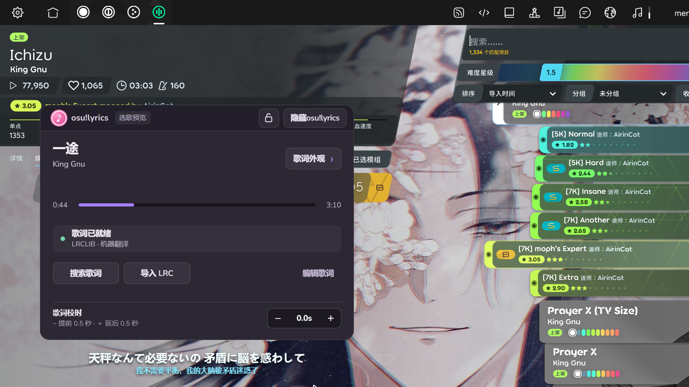

给 osu!lazer 接一条歌词时间轴

打 osu!lazer 时，我想把日文原词和中文翻译放在屏幕边上，选歌预览时也能看见。真正费工夫的不是画一个透明窗口，而是回答三个问题：现在放的是哪一首、歌词文件是不是这首歌的这个版本、这一帧该显示哪一句。
osu!lyrics 的 Windows 版和源码已经放在 GitHub。它是游戏外的独立窗口，下面这张图是在 osu!lazer 选歌界面实际运行时截的；小窗可以收起，歌词留在原位。
先取得游戏的时间，而不是猜时间
我没有去改 osu! 的源码，也没有从窗口标题猜歌名。程序第一次运行时可以单独安装 tosu；它在本机提供状态接口，osu!lyrics 每隔约 100 毫秒读取 127.0.0.1:24050/json/v2。normalizeTosu把返回值收成一份固定的数据：谱面的 Unicode/罗马字曲名、歌手、难度名、当前谱面时间 beatmap.time.live、音频长度 mp3Length、暂停状态，以及打图时 Mod 的播放倍率。tosu 负责观察游戏，我的窗口只负责歌词。这条边界也让工具不用随 osu! 的内部结构一起编译。
只在前端拿到一次时间后靠 Date.now() 一直往前推，短时间看不出问题，暂停、重试、切歌后却会漂。现在的规则是：以 tosu 的最近一次谱面时间为准，只在两次采样之间补一点画面时间。advancePosition最多补 180 毫秒，并乘当前播放倍率；一旦暂停或断开就停在采样值，不再自走。重新采样会直接校正位置，所以重试也不会继承上一轮的计时。
歌曲结束还有一条独立边界。打图最后一个物件不等于音频结束，而短版歌曲的 LRC 可能来自更长的录音。程序优先用 mp3Length 判断音频终点，到达后停止显示；进入结算画面也会清掉歌词。选歌预览则继续使用 tosu 报告的 live 时间，第一句还没到时不提前亮出后面的词。LRC 自身的固定偏差留给每首歌的校时值处理，避免把“文件偏了 0.5 秒”和“播放时钟漂了”混在一起。
歌名相同，不代表歌词就是同一份
带时间戳的歌词从 LRCLIB 取。先查本地 LRC，再查在线候选；本地导入或编辑过的文本优先。搜索词会试 Unicode 曲名和罗马字曲名，也会去掉 TV Size 等版本后缀，但去掉后缀只是为了找到候选，不是直接认定候选可用。真正选择时还要看音频长度。这样 Gurenge (TV Size) 能找到名字略有差异的歌词，同时不会把完整录音的时间轴套在短版上。
rankLyrics给曲名、歌手、时长和歌词语言分别计分。曲名完全相同加 70 分，歌手完全相同加 40 分；时长差在 12 秒内加 25 分，差到 45 秒以上则扣 100 分。自动选用还要求至少 75 分；若前两名分数接近、时长却差了 15 秒以上，就交给用户挑。这个保守规则比“搜索第一条就是答案”更符合打图场景。
语言也不能只看曲名。Love Letter - YOASOBI 有英语和日语歌词候选，曲名与歌手可以完全一样。程序检查 LRC 正文的假名分布；谱面没有明确写 English Version、且候选同时有英日两种时，优先日文。过去自动缓存过的英文候选也会重新复核，但用户手动选定的版本不会被覆盖。
合集谱面更麻烦：Various Artists - 6k Starter Pack 的实际歌名可能写在难度里。parseCompilationDifficulty只对符合“合集作者 + 曲包标题”的谱面尝试从难度名拆出歌手和歌名；普通谱面的 Hard、Expert 不会误当曲名。缓存键也随之使用拆出的歌曲信息，避免同一个 Pack 里的几首歌共用一份歌词。
LRCLIB 返回 503 时，请求层按 Retry-After 或递增间隔有限次重试。搜索仍失败，就尝试仅曲名查询和另一个元数据接口；持续不可用时保留已有歌词，并允许导入 LRC。这些回退只改变获取途径，不放宽版本判断。
翻译要跟着时间戳走，也要能被取消
LRC 允许同一时间戳出现两行。解析时把同一时刻的原文、译文配成一条记录，原有的双语歌词便不用再翻译。只有缺少中文的行才会交给机器翻译。当前实现每次最多送 8 行到 Google 翻译的非官方网页接口；如果返回结果的行数和输入不一致，就逐行重试，避免译文整体错位。机器译文会标明来源，服务失败时仍保留原词。使用这个功能时歌词文本会发送给 Google，接口没有稳定性保证。
更隐蔽的问题是异步返回。用户切到下一首歌、改选另一版歌词，或者正在本地编辑时，上一个翻译请求可能刚好完成。LyricsService用 generation 标记当前歌曲、用 selectionToken 标记当前歌词版本；写回前还检查本地文件是否已被改动。只要任何一个条件变了，旧结果就不能覆盖新歌或手工修改的内容。搜索请求也有自己的 searchRun 和取消信号，快速滚动选歌时不会让慢请求倒灌到当前面板。
界面用 Electron 的透明置顶窗口实现，位置、外观、锁定状态和每首歌的校时保存在本机。游戏、谱面、音乐和歌词不随安装包分发；osu! 的游戏素材归 osu!/ppy 等权利人，歌曲与歌词归各自权利人。这个小工具只是为了游玩时少在屏幕和歌词页面之间来回切。
评论